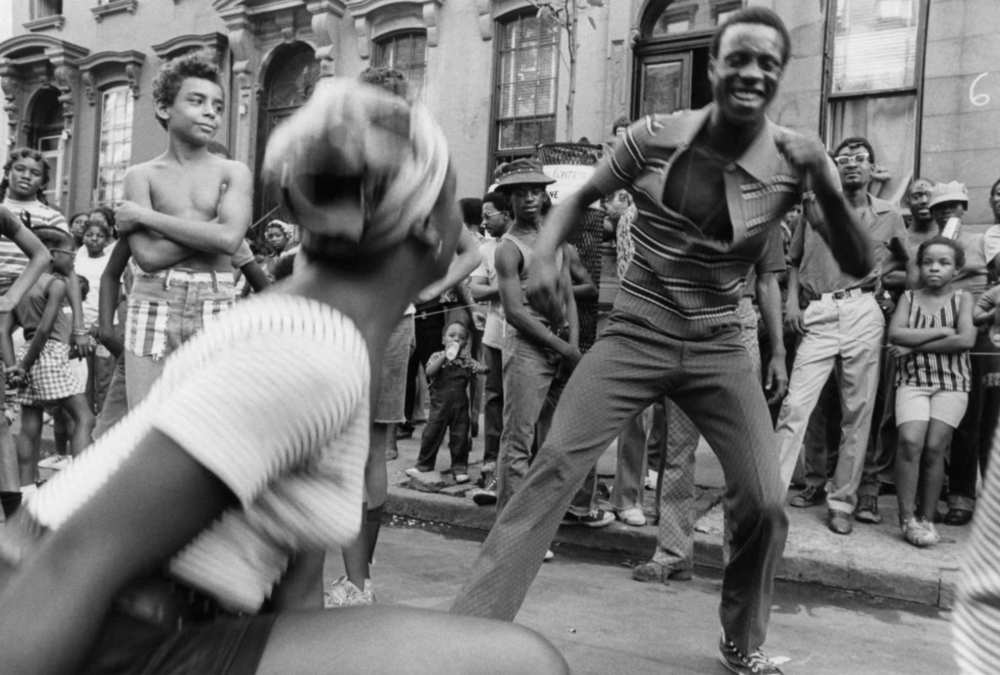
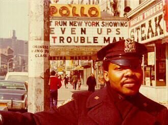
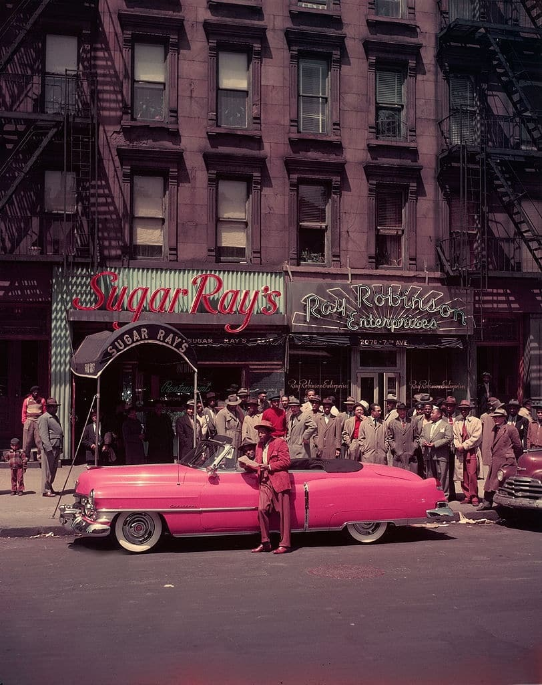
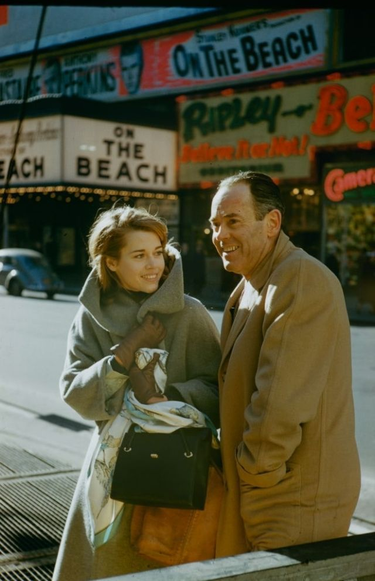
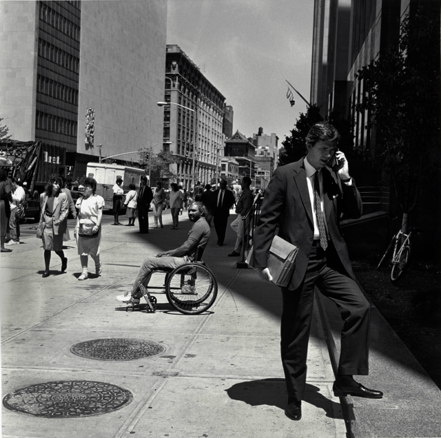
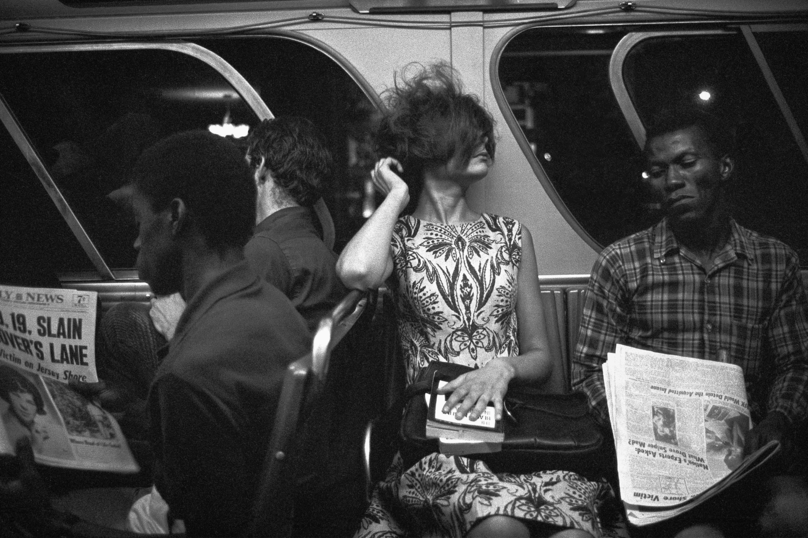

Times Square, 1978

Calvin Klein models, 1974
Times Square, 1978
Calvin Klein models, 1974
Lots o’ tags, 1985
Nap time. (Cue pickpockets in 3, 2, 1,…)

meow
Your Father’s Mustache in the Village, 1970s

Dondi at work

Chester Higgins Block Party, Harlem, New York 1973

Patrolman Harry Mitchell 28pct.(NYPD)
(That’s a good double bill playing at the theater.)

Market Diner, 1972
Ice skating in Central Park, 1972

Little Italy, 1975

Sugar Ray Robinson leaning on his 1950 pink Cadillac convertible, Harlem, 1950s. Photographed by George Karger.

Manhattan-bound 7 train pulling into the Lincoln Avenue station, 1986
You must take the A train, to go to Sugar Hill, way up in Harlem
Early graffiti, 1970s
Businessmen they drink my wine; plowmen dig my earth. Financial district, 1964.
Snowy day on Broadway and 73rd, 1978

Sutphin Boulevard & Jamaica Avenue, Queens, late 1970s

A reporter interviews the man on the street, Broadway near 71st Street, 1978. The Dorilton in the background.
Dude is too cool to sit down.

Riding the coaster, Coney Island, 1978
Washington Square, 1980
Out for a stroll, and/or mourning something. 84th and Broadway, 1978.

Short N Train, 1977
La deliciosa energia de Del Monte
16th Street and 8th Avenue, 1983

Train, garbage, Coney Island, 1980

Dude ain’t happy. Subway, 1971.

Jane Fonda with her father Henry, photographed 1960 by Leonard McCombe for Life magazine.
Tod Papageorge New York City 1967

Coney Island, 1978

3rd Ave in the Bronx, 1981

Park Ave and 125th St, 1982

House of Paradise, Times Square 1970s
Coming home from school, Harlem 1970s
Statue of Liberty trying to keep her feet out of a nasty oil slick, 1973

3rd Ave at 74th Street, in the mid 80s

LL Cool J says fuck you, 1985
The A Train in Far Rockaway, 1976
 Man in street on phone, Police Plaza near Canal Street, New York, 1994
Photo: Michael Spano

Tod Papageorge Members of the Black Panther Party, New York City 1967

The 1 Train at 125th Street
Bus stop at Fordham Road and Decatur Ave in the Bronx

Too cool for school on East 63rd Street, 1973

Upper West Side in the 1980s
Surely by 1988 nobody was drinking Tab anymore
Mott Street, 1985

8th Street, 1984

Dave’s at Canal and Broadway, 1980

Tod Papageorge New York City 1969
{kind=link}